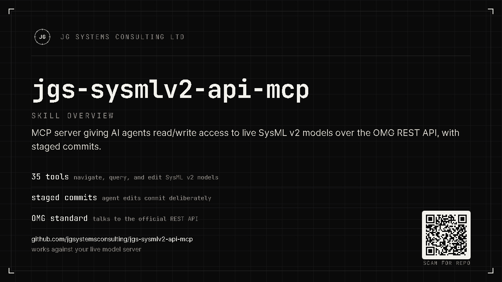

Stage
Create, modify, delete, relate, move, or batch elements. Every call lands in the session's own buffer, never on the server.
Give an agent a live SysML v2 model, not a screenshot of one.
jgs-sysmlv2-api-mcp is an MCP server that connects an AI agent directly to a running SysML v2 API endpoint. It reads the model as it actually is and writes to it through a staged, reviewable commit, using the same vendor-neutral OMG REST API that any conformant SysML v2 implementation exposes.

This server talks to any conformant SysML v2 API endpoint: the OMG reference pilot, or a commercial implementation. There is no CATIA Magic, no desktop tool, no GUI in the loop. If your systems model already lives in a headless SysML v2 API repository, and you want an AI agent to explore it, extend it, or restructure it directly, this is that bridge.
It is built for teams and individual engineers who want an agent working directly against a SysML v2 API project: exploring an existing model, authoring new elements and relationships, running parallel branches per agent session, or managing project lifecycle, all through the standard API rather than a proprietary desktop integration.
It is a companion to jgs-magic-sysmlv2-mcp, which drives a running
Cameo instance instead. Use this server when the model lives in a headless SysML v2 API
repository; use the Cameo bridge when it lives in a running Cameo desktop session.
Writes never touch the server directly. create_element,
modify_element, delete_element, delete_subtree,
create_relationship, move_element, and stage_batch all
accumulate operations in an in-process buffer. The agent reviews the full staged batch and
receives a confirm token bound to a fingerprint of exactly what it is about to commit. Only
then does commit_changes post the batch as one atomic commit.
If anything new is staged after the review step, the token no longer matches and the commit is refused until the buffer is reviewed again. A commit can never include an operation the agent was not shown first.
Create, modify, delete, relate, move, or batch elements. Every call lands in the session's own buffer, never on the server.
review_changes returns the full list of staged operations plus a confirm
token bound to that exact buffer.
commit_changes with the confirm token posts one atomic commit.
discard_changes drops the buffer with no trace if the agent changes its
mind.
The full, generated list with parameters lives on the tool reference page. Here is the shape of it.
Walk a model from its unowned roots down through owned children, sideways through typed relationships, or by name lookup. Includes commit history, client-side diff between two commits, and cursor-paginated queries.
Create, modify, delete, relate, move, and batch elements into the buffer, then review and commit as one atomic, confirm-token-gated operation.
Create, rename, redescribe, list, and verify-deleted projects. The session's own configured project is refused as a delete target, so an agent cannot delete the ground it is standing on.
Run one branch per agent session: create, retarget, diff, and squash-merge branches, with tags as named checkpoints along the way.
Rounding out the surface: ping and
stats for infrastructure health and server metrics.
The server speaks the standard MCP stdio protocol, so any MCP-compatible client that can launch a local process can use it. It has been built and verified against Claude Code; other clients that follow the same protocol, such as Claude Desktop, should work the same way.
Claude Code · Claude Desktop · Any MCP-compatible client
Download jgs-sysmlv2-api-mcp.exe and
SHA256SUMS.txt from the Releases page and verify the checksum
before running the exe.
Get-FileHash .\jgs-sysmlv2-api-mcp.exe -Algorithm SHA256Place the licence file next to the exe to unlock the PRO
authoring tools, set the three environment variables, and point your MCP
client at the exe. See docs/install.md for the full
walkthrough, a Docker recipe for running the OMG reference pilot locally,
creating your first project, and how to verify the install.
Copy examples/.mcp.json.example into your MCP client's config
location (for example .mcp.json in a project root), drop the .example
suffix, fill in your endpoint, token, and project UUID, and point
command at the absolute exe path if the exe's folder is not on
your PATH:
{
"mcpServers": {
"jgs-sysmlv2": {
"command": "C:\\path\\to\\jgs-sysmlv2-api-mcp.exe",
"env": {
"SYSMLV2_BASE_URL": "https://your-sysmlv2-endpoint.example.com",
"SYSMLV2_TOKEN": "YOUR_BEARER_TOKEN_HERE",
"SYSMLV2_PROJECT": "YOUR_PROJECT_UUID_HERE"
}
}
}
}Restart your MCP client so it picks up the new server. Then ask your agent to
call ping, the smallest tool in the registry. It does a live round trip to the
endpoint's commit list and reports whether the connection is healthy:
{"up": true, "api_version": null, "commit_count": 0}If ping fails, recheck SYSMLV2_BASE_URL and
SYSMLV2_TOKEN first: nearly every install problem traces back to one of those
two. From there, docs/usage.md walks four full workflows: exploring a model you
did not build, authoring and committing a change, running one branch per agent session, and
managing a project's lifecycle.
Discovered by a day-one spike against the pilot, these decisions run through the implementation:
The commit POST body is a CommitRequest, not a Commit. There
is no client-supplied top-level id; the server assigns the commit id.
The official client's typed Element model drops declaredName
and other SysML payload fields, so reads go through a raw-JSON path instead.
The commit list is not guaranteed to be newest-first. Head is always resolved by
walking previousCommit parentage, never by trusting list order.